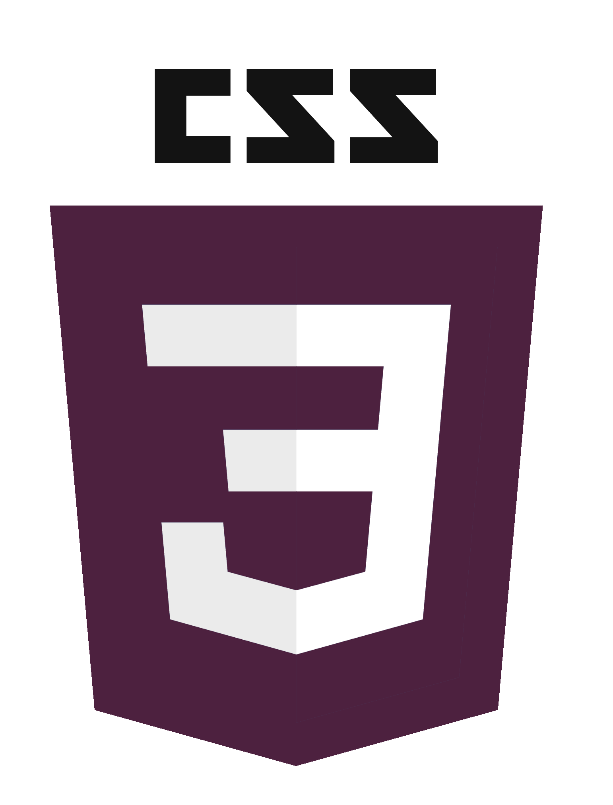

Skills



This is a list of the skills I have, I am proficient in Adobe Photoshop, Illustrator, InDesign, HTML, CSS, and UX/UI. I have experience using JavaScript and PHP. I use GitHub as a form of version control when working on projects, both when working on group projects and individually. I use the editor Sublime Text when coding and have experience working with other editors. I have made any websites and developed services using Wordpress.